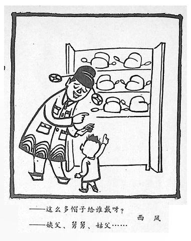
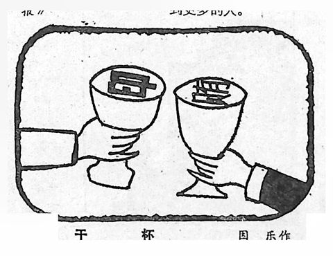
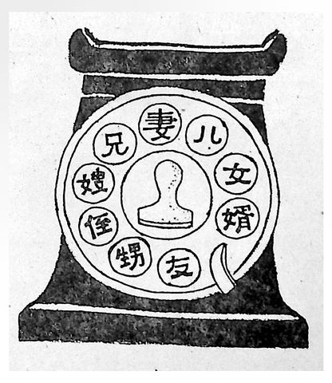
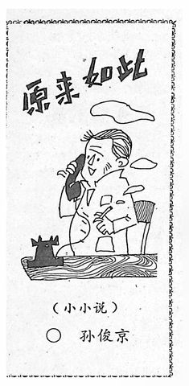

Privilege 19
-

无题 · Untitled (“So many hats — who are they for?”)
Xi Feng 西风. Renshi (Personnel), 1985 no. 1 (whole no. 1), inside back cover. -
 “一落千丈” · “A Thousand-Foot Fall”
“一落千丈” · “A Thousand-Foot Fall”
Liu Ran 刘然; Tian Lin 田林. Renshi (Personnel), 1985 no. 1 (whole no. 1), inside back cover. -
 今天出门戴哪顶帽子呢？ · Which Hat Shall I Wear Today?
今天出门戴哪顶帽子呢？ · Which Hat Shall I Wear Today?
Li Bo 李波. Renshi (Personnel), 1985 no. 3 (whole no. 3), p. 44. -
 无题（通讯《撕网》配图） · Untitled (drawing for the report “Tearing the Net”)
无题（通讯《撕网》配图） · Untitled (drawing for the report “Tearing the Net”)
Qing Jun 青军. Renshi (Personnel), 1986 no. 1 (whole no. 4), p. 15. -
 可以理解的感情 · Understandable Feelings
可以理解的感情 · Understandable Feelings
Unattributed. Renshi (Personnel), 1986 no. 1 (whole no. 4), p. 43. -
 要是官衔也能保险就好了！ · If Only Official Rank Could Be Insured Too!
要是官衔也能保险就好了！ · If Only Official Rank Could Be Insured Too!
Unattributed. Renshi (Personnel), 1986 no. 7 (whole no. 10), p. 29. -
 表率 · An Example to Others
表率 · An Example to Others
Drawn by Li Yunqing 李云庆; adapted by Wang Bianxiang 王变祥. Renshi (Personnel), 1986 no. 8 (whole no. 11), inside back cover. -

干杯 · Bottoms Up
Yin Le 因乐. Renshi (Personnel), 1986 no. 11 (whole no. 14), p. 39. -
 局长要投篮 · The Bureau Chief Wants to Shoot a Basket
局长要投篮 · The Bureau Chief Wants to Shoot a Basket
Qiao Bo 乔波. Renshi (Personnel), 1987 no. 2 (whole no. 17), inside back cover. -

内线（讽刺诗画） · Inside Line (satirical poem drawing)
Drawn by Tang Shaoyi 唐少仪. Renshi (Personnel), 1987 no. 12 (whole no. 27), p. 39. -
 到时候就闹 · When the Time Comes, It Goes Off
到时候就闹 · When the Time Comes, It Goes Off
Xue Sixiao 薛思孝. Renshi (Personnel), 1988 no. 1 (whole no. 28), p. 46. -
 肚子大了，“份量”轻了 · Bigger Belly, Less “Weight”
肚子大了，“份量”轻了 · Bigger Belly, Less “Weight”
Guo Baosheng 郭宝声. Renshi (Personnel), 1988 no. 1 (whole no. 28), p. 47. -

原来如此（题图） · So That's How It Is (title drawing)
Unattributed. Renshi (Personnel), 1988 no. 2 (whole no. 29), p. 48. -
 无题 · Untitled
无题 · Untitled
Li Lin 李林. Renshi (Personnel), 1988 no. 3 (whole no. 30), p. 42. -
 补助（题图） · Allowances (title drawing)
补助（题图） · Allowances (title drawing)
Unattributed. Renshi (Personnel), 1988 no. 11 (whole no. 38), p. 39. -
 驸马走私受严惩 · An Imperial Son-in-Law Is Severely Punished for Smuggling
驸马走私受严惩 · An Imperial Son-in-Law Is Severely Punished for Smuggling
Adapted and drawn by Wu Guoliang 吴国良. Renshi (Personnel), 1988 no. 11 (whole no. 38), inside back cover. -
 地下工作者 · Underground Workers
地下工作者 · Underground Workers
Jiang Sizhong 蒋思忠. Renshi (Personnel), 1988 no. 12 (whole no. 39), inside back cover. -
 熬夜（题图） · Staying Up All Night (title illustration)
熬夜（题图） · Staying Up All Night (title illustration)
Unattributed. Renshi (Personnel), 1989 no. 9 (whole no. 48), p. 40. -
 陨落（题图） · Falling (title illustration)
陨落（题图） · Falling (title illustration)
Unattributed. Renshi (Personnel), 1989 no. 11 (whole no. 50), p. 40.